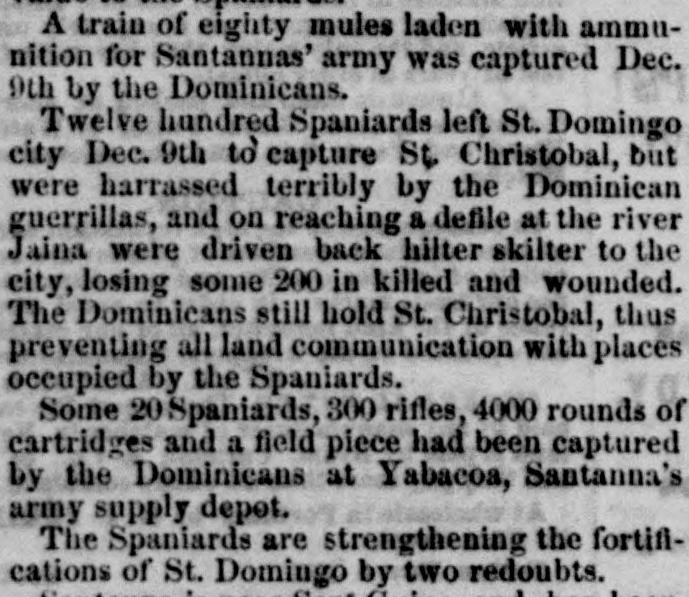
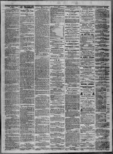

Some 20 Spaniards, 300 rifles, 4000 rounds of cartridges and a fieldUnos 20 españoles, 300 fusiles, 4000 cartuchos y una pieza de campaña
The Portland Daily Press. Portland, Me., January 20, 1864. Page 3. View the originalVer el original


See the full pageVer la página completaThe newspaper reported that Dominicans captured Spanish supplies and a field piece at Yabacoa, while Spanish forces under Santana remained unable to move forward near San Guino due to reinforcements of 700 men being offset by over 700 sick in camp. Additionally, a severe battle occurred on December 20th at Puerto Plata, resulting in the defeat of the Spaniards, who lost 100 out of 600 men and a cannon to the gallantly fighting Dominicans. The Standard characterized the contest as unprofitable and dishonorable for Spain, noting that the Spaniards only hold the ground they stand on, while a separate weather report from Toronto noted a fierce snowstorm stopping railroad trains.El diario consignó que los dominicanos capturaron suministros y una pieza de campaña española en Yabacoa, mientras que las columnas peninsulares al mando de Santana permanecían inmovilizadas cerca de San Guino, toda vez que la llegada de 700 hombres de refuerzo quedó neutralizada por más de 700 enfermos en el campamento. Además, el 20 de diciembre se libró una cruenta batalla en Puerto Plata que concluyó con la derrota de los españoles, quienes perdieron 100 de sus 600 efectivos y un cañón ante el denodado arrojo dominicano. El Standard describió la lucha como estéril y deshonrosa para España, señalando que los españoles solo dominan el terreno que pisan, al tiempo que un parte meteorológico independiente desde Toronto daba cuenta de una feroz tormenta de nieve que paralizó los trenes.
FULL TEXT:TEXTO COMPLETO:
A train of eighty mules laden with ammunition for Santannas' army was captured Dec. 9th by the Dominicans.Un tren de ochenta mulas cargadas con municiones para el ejército de Santana fue capturado el 9 de diciembre por los dominicanos.
Twelve hundred Spaniards left St. Domingo city Dec. 9th to capture St. Christobal, but were harrassed terribly by the Dominican guerrillas, and on reaching a defile at the river Jaina were driven back hilter skilter to the city, losing some 200 in killed and wounded. The Dominicans still hold St. Christobal, thus preventing all land communication with places occupied by the Spaniards.Mil doscientos españoles salieron de la ciudad de Santo Domingo el 9 de diciembre para capturar San Cristóbal, pero fueron acosados terriblemente por las guerrillas dominicanas, y al llegar a un desfiladero en el río Jaina fueron empujados atrás desordenadamente a la ciudad, perdiendo unos 200 en muertos y heridos. Los dominicanos todavía sostienen San Cristóbal, impidiendo así toda comunicación terrestre con los lugares ocupados por los españoles.
Some 20 Spaniards, 300 rifles, 4000 rounds of cartridges and a field piece had been captured by the Dominicans at Yabacoa, Santanna's army supply depot.Unos 20 españoles, 300 rifles, 4000 cartuchos y una pieza de campaña habían sido capturados por los dominicanos en Yabacoa, el depósito de suministros del ejército de Santana.
The Spaniards are strengthening the fortifications of St. Domingo by two redoubts.Los españoles están fortaleciendo las fortificaciones de Santo Domingo por dos reductos.